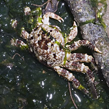
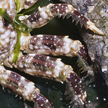
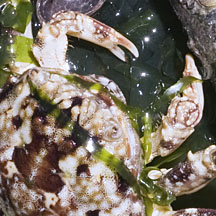
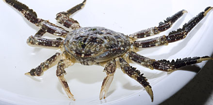
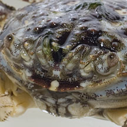
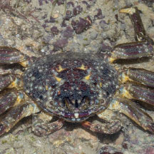

|
|
| crabs text index | photo index |
| Phylum Arthropoda > Subphylum Crustacea > Class Malacostraca > Order Decapoda > Brachyurans |
| Rafting crab Plagusia sp. Family Plagusiidae updated Dec 2019 Where seen? This bumpy crab that resembles the Sally-light-foot crab (Grapsus albolineatus) is sometimes seen on rocky shores in the North and South. Previously placed in Family Grapsidae. Features: Body width 5-6cm. Body oval (not so circular), convex (not flat), covered with small bumps. Pincers short slender. Walking legs long fringed with short hairs, tipped with pointy claws. With these legs, the crab clings tightly so it doesn't get washed away in the waves, and can scramble quickly among slippery rocks. Mottled body and legs. Colours seen include shades of brown, blue, purple, orange. Sometimes mistaken for the Sally-light-foot crab (Grapsus albolineatus) which has a more circular flatter smoother body. |
|
 Changi, Jul 12 |
 |
 |
|
 Changi, Aug 12 |
 Depression between the eyes. |
|
| Rafting crabs on Singapore shores |
On wildsingapore
flickr
|
| Other sightings on Singapore shores |
 |
Family
Plagusiidae recorded for Singapore
|
|
Acknowledgements
|